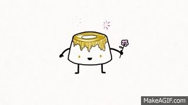

Pudim de Leite Condensado
Veja como preparar um delicioso pudim de leite condensado super lisinho, com uma calda dourada de
caramelo que derrete na boca. Essa sobremesa clássica conquista qualquer pessoa pelo sabor marcante
e pela textura cremosa irresistível. Feito com ingredientes simples e um preparo fácil, o pudim é
perfeito para reunir a família em momentos especiais ou adoçar o dia de forma prática. Com poucos
passos, você terá uma sobremesa elegante, saborosa e cheia de carinho em cada pedaço.

Fácil

1h
Ingredientes
- 6 colheres de açúcar
- 1 lata de leite condensado
- 1 lata de leite - utilize a mesma medida do leite condensado
- 3 ovos
Modo de Preparo
- Em uma forma para pudim, de 20 centímetros de diâmetro, coloque 6 colheres de sopa de açúcar e leve ao
fogo médio até virar uma calda caramelada, por mais ou menos 3 minutos.
- Retire do fogo e vá virando a forma, de modo que a calda forre todo o fundo e lateral da mesma. Reserve.
- Num liquidificador coloque uma lata de leite condensado, uma lata de leite, a mesma medida da lata de
leite condensado, e 3 ovos e bata bem por mais ou menos 1 minuto.
- Desligue o liquidificador e deixe a mistura descansar por 15 minutos.
- Com esta espera a espuma fica sobre a superfície, o pudim fica sem furinhos, mas macio.
- Com a ajuda de uma colher segure a espuma que está na superfície e despeje o conteúdo do liquidificador,
com cuidado, na fôrma caramelada reservada acima e leve ao forno médio, em banho-maria, a 180 graus
Celsius por uma hora e meia.
- Retire do forno, deixe esfriar e leve à geladeira por mais ou menos duas horas. Desenforme e sirva em
seguida.

Quando for colocar a massa do pudim na forma, use uma peneira